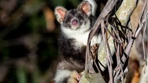

Petauro Gigante:
 El petauro gigante ( Petauroides volans), un marsupial planeador, se encuentra en Australia, específicamente en el este de Australia, incluyendo el sur de Queensland, el este de Nueva Gales del Sur y los bosques de montaña de las tierras altas centrales de Victoria.
Amenazas
La tala de árboles y el desarrollo urbano en la costa este de Australia, así como los devastadores incendios cada vez más frecuentes por la crisis climática, han reducido en los últimos veinte años la población de Petauroides volans hasta en un 80 por ciento en las últimas cinco décadas.